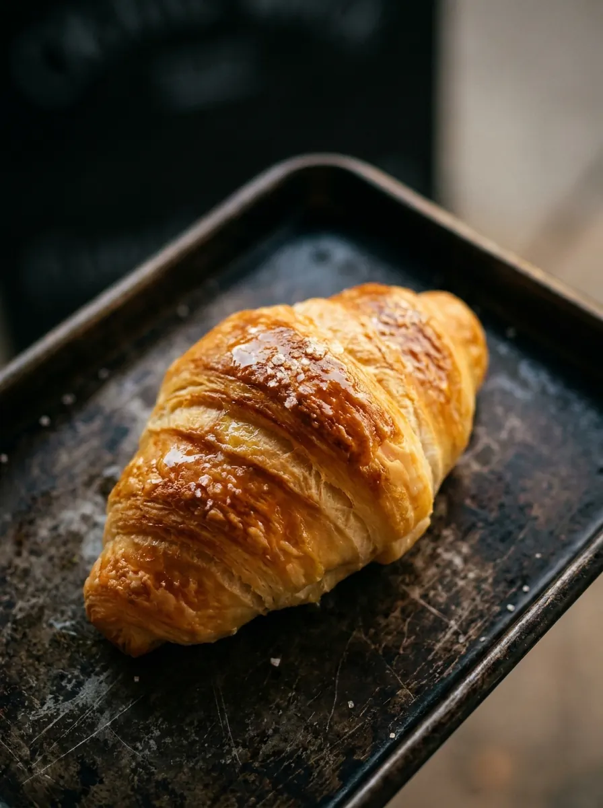
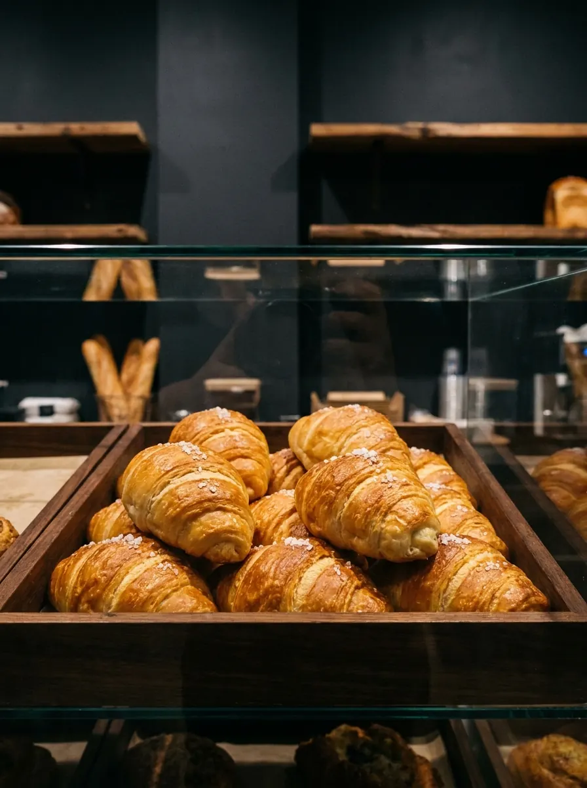
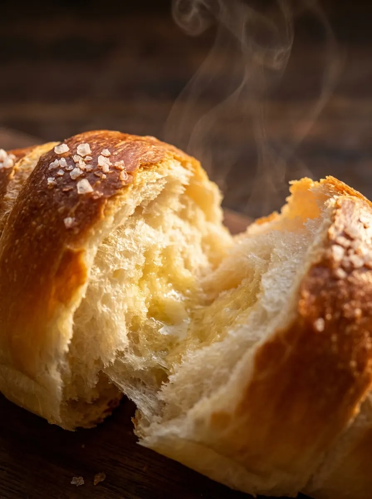
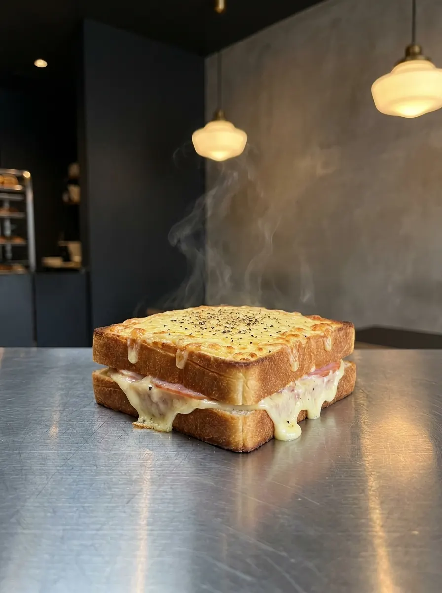
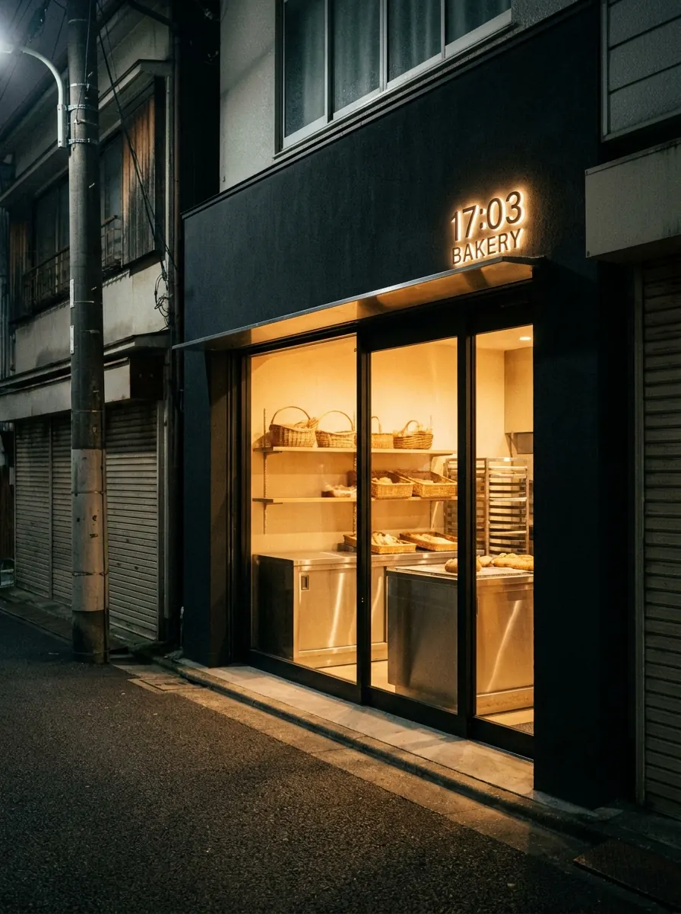

N° 01 — DAILY

17:03 塩パン
320JPY夕方の焼き上がりに合わせて、外は薄く香ばしく、中は少しだけもちっと。バターと塩を強めに効かせた店の定番。
Seventeen-Oh-Three Bakery — est. 2025
夕方から、パンがもう一度焼き上がる。
今日を閉じる前に、焼きたてを。
17:03 BAKERYは、夕方にもう一度パンが焼き上がる都市型ベーカリーです。
仕事帰りの15分に、明日の朝まで続く小さな余白を。

EVENING · 17:0302 — Evening Bake
17:03、店の奥で二度目のオーブンが開く。
塩パン、クロックムッシュ、食事に寄り添うハードブレッド。
朝のためだけではないパンを、夜の街へ焼き出しています。

17:03
STAINLESS04 — How to Use
18:00に取り置き、19:30にピックアップ。
そのまま公園で食べても、家で温め直しても、明日の朝に残してもいい。
パンを買う時間を、帰り道の習慣にしてください。
当日 12:00 から @1703bakery の DMで受付。商品名と受け取り時間を送るだけ。
定番のパンと、その日の夜焼きメニューが並ぶ。Instagramで焼き上がりを確認できます。
取り置きは閉店30分前まで。袋を受け取って、帰り道の続きへ。
夜でも重すぎないサイズと味設計。半分は明朝、リベイクしてバターで。

19:42 / TUE05 — Story
パン屋は朝のもの、という決まりを少しだけずらしたかった。
17:03は、早すぎず、遅すぎない時間。
働く日と夜の生活のあいだに、焼きたての匂いが入る余白を作ります。
06 — Shop Info
代々木上原の裏通りにある、小さな夕方焼きベーカリーです。
6席だけイートインがあります。
取り置きは当日12:00からInstagram DMで受付します。
07 — Instagram
@1703bakery
本日の焼き上がり、売り切れ状況、週替わりメニューはInstagramで更新します。
帰る前に、今日のパンを確認してください。